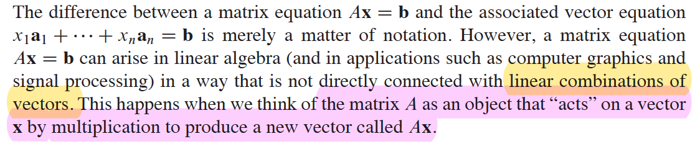

Purdue MA 26500 Fall 2022 Midterm I Solutions
Linear algebra provides mathematical tools to represent and analyze data and models in higher dimensions. It is essential for machine learning, computer graphics, control theory, and other scientific and engineering fields. Starting from this post, I will provide study guides and solutions to Purdue MA26500 exams in the last few semesters.
Introduction
Purdue University is a world-renowned public research university that advances scientific, technological, engineering, and math discoveries. Purdue Department of Mathematics provides a linear algebra course MA 26500 every semester, as it is mandatory for undergraduate students of many science and engineering majors.
Disclosure: This blog site is reader-supported. When you buy through the affiliate links below, as an Amazon Associate, I earn a tiny commission from qualifying purchases. Thank you.
Basic Information
- Course Title: Introduction to Linear Algebra
- Credit Hours: 3.00
- Lectures: 50 minutes per session, 3 times a week, 16 weeks
- Course Description: A computational introduction to linear algebra, which plays a fundamental role in science, engineering, and the social sciences, and this course will provide the student a firm basis for the use of such.
- Key Topics: systems of linear equations; matrix algebra; vector spaces; determinants; eigenvalues and eigenvectors; diagonalization of matrices; and applications
- Textbook: Linear Algebra and its Applications (6th Edition) by David C. Lay, Steven R. Lay, and Judi J. McDonald
- Study Guide: Study Guide for Linear Algebra and Its Applications 6th Edition by the same authors for the students.
Homework and Exams
- 35 online homework assignments using MyLab Math
- 36 handwriting homework assignments (Spring 2024)
- Midterm I (Book Sections 1.1 – 3.3): 1 hour (6-week mark)
- Midterm II (Book Sections 4.1 – 5.7): 1 hour (12-week mark)
- Midterm format: a combination of multiple-choice questions and short answer questions
- Final (Comprehensive Common): 2 hours (16-week mark), all multiple-choice questions
- Grades
- Online Homework - 17%
- Written Homework - 8%
- Midterm Exam I - 20%
- Midterm Exam II - 20%
- Final Exam - 35%
Reference Links
- Purdue Department of Mathematics Course Achive
- Purdue MA 26500 Spring 2024
- Purdue MA 26500 Exam Archive
Fall 2022 Midterm I Solutions
Problem 1 (10 points)
Let \(A=\begin{bmatrix}1 & 2\\3 & 5\\\end{bmatrix}\)，\(B=\begin{bmatrix}3 & 1\\4 & 1\\\end{bmatrix}\), and \(C=AB^{-1}= \begin{bmatrix}a & b\\c & d\\\end{bmatrix}\), then \(a+b+c+d=\)
- A. \(-7\)
- B. \(8\)
- C. \(7\)
- D. \(-8\)
- E. \(0\)
Problem 1 Solution
Because \(C=AB^{-1}\), we can multiple both sides by \(B\) and obtain \(CB=AB^{-1}B=A\). So \[ \begin{bmatrix}a & b\\c & d\\\end{bmatrix} \begin{bmatrix}3 & 1\\4 & 1\\\end{bmatrix}= \begin{bmatrix}1 & 2\\3 & 5\\\end{bmatrix} \] Further, compute at the left side \[ \begin{bmatrix}3a+4b & a+b\\3c+4d & c+d\\\end{bmatrix}= \begin{bmatrix}1 & 2\\3 & 5\\\end{bmatrix} \] From here we can directly see \(a+b=2\) and \(c+d=5\), so \(a+b+c+d=7\). The answer is C.
⚠️Alert: There is no need to find the inverse of the matrix \(B\) and multiply the result with \(A\). Even if you can deduce the same answer, it is very inefficient and takes too much time.
Problem 2 (10 points)
Let \(\mathrm L\) be a linear transformation from \(\mathbb R^3\) to \(\mathbb R^3\) whose standard matrix is \(\begin{bmatrix}1 &2 &3\\0 &1 &1\\2 &3 & k\\\end{bmatrix}\) where \(k\) is a real number. Find all values of \(k\) such that \(\mathrm L\) is one-to-one.
- A. \(k\neq 1\)
- B. \(k\neq 2\)
- C. \(k\neq 3\)
- D. \(k\neq 4\)
- E. \(k\neq 5\)
Problem 2 Solution
For this standard matrix, do elementary row operations below to achieve row echelon form.
First, add -2 times row 1 to row 3: \[\begin{bmatrix}1 &2 &3\\0 &1 &1\\0 &-1 &k-6\\\end{bmatrix}\] Then add row 2 to row 3: \[\begin{bmatrix}1 &2 &3\\0 &1 &1\\0 &0 &k-5\\\end{bmatrix}\] If \(k=5\), the equation \(A\mathbf x=\mathbf b\) has a free variable \(x_3\) and each \(\mathbf b\) is the image of more than one \(\mathbf x\). That is, \(\mathrm L\) is not one-to-one. So the answer is E.
Problem 3 (10 points)
Which of the following statements is/are always TRUE?
If \(A\) is a singular \(8\times 8\) matrix, then its last column must be a linear combination of the first seven columns.
Let \(A\) be a \(5\times 7\) matrix such that \(A\cdot\pmb x=\pmb b\) is consistent for any \(\pmb{b}∈\mathbb{R}^5\), and let \(B\) be a \(7\times 11\) matrix such that \(B\cdot\pmb x=\pmb c\) is consistent for any \(\pmb{c}∈\mathbb{R}^7\). Then, the matrix equation \(AB\cdot \pmb x=\pmb b\) is consistent for any \(\pmb{b}∈\mathbb{R}^5\).
For any \(m\times n\) matrix \(A\), the dimension of the null space of \(A\) equals the dimension of the null space of its transpose \(A^T\).
If \(A\) is an \(m\times n\) matrix, then the set \({A\cdot\pmb x|\pmb x∈\mathbb{R}^n}\) is a subspace of \(\mathbb{R}^m\).
- A. (i) only
- B. (i) and (ii) only
- C. (iv) only
- D. (ii) and (iv) only
- E. (iii) and (iv) only
Problem 3 Solution
For (i), a singular matrix \(A\) is noninvertible and has \(det(A)=0\). By Theorem 8 of Section 2.3, the columns of \(A\) form a linearly dependent set. Denote \(A=[\pmb{v}_1\cdots\pmb{v}_8]\), then there exist weights \(c_1, c_2,\cdots,c_8\), not all zero, such that \[c_1\pmb{v}_1+c_2\pmb{v}_2+\cdots+c_8\pmb{v}_8=\pmb{0}\] Does this imply that statement (i) is true? No! If \(c_8\) is 0, \(\pmb{v}_8\) is NOT a linear combination of the columns \(\pmb{v}_1\) to \(\pmb{v}_7\).
For (ii), since \(AB\cdot\pmb x=A(B\pmb{x})=A\pmb c=\pmb b\). the consistency holds for the new \(5\times 11\) matrix \(AB\) as well. It is true.
For (iii), since \(A\) is a \(m\times n\) matrix, \(A^T\) is a \(n\times m\) matrix. From Section 2.9 Dimension and Rank, we know that "If a matrix \(A\) has \(n\) columns, then \(\mathrm rank\,A+\mathrm{dim\,Nul}\,A= n\)." From this, we can list \[\begin{align} \mathrm{dim\,Nul}\,A&=n-rank\,A\\ \mathrm{dim\,Nul}\,A^T&=m-rank\,A^T \end{align}\] As these two dimension numbers are not necessarily the same, (iii) is not true.
For (iv), we can first review the definition of subspace. From Section 2.8 Subspaces of \(\mathbb R^n\),
A subspace of \(\mathbb R^n\) is any set \(H\) in \(\mathbb R^n\) that has three properties:
a. The zero vector is in \(H\).
b. For each \(\pmb u\) and \(\pmb v\) in \(H\), the sum \(\pmb u+\pmb v\) is in \(H\).
c. For each \(\pmb u\) in \(H\) and each scalar \(c\), the vector \(c\pmb u\) is in H.
Denote \(\pmb u=A\pmb x\), \(\pmb v=A\pmb y\), we have \[\begin{align} A\cdot\pmb{0}&=\pmb{0}\\ \pmb u+\pmb v&=A\pmb{x}+A\pmb{y}=A(\pmb{x}+\pmb{y})\\ c\pmb u&=cA\pmb{x}=A(c\pmb x) \end{align}\] All the results on the right side are in the set as well. This proves that (iv) is true.
As both (ii) and (iv) are true, the answer is D.
Problem 4 (10 points)
Compute the determinant of the given matrix \(\begin{bmatrix}5 &7 &2 &2\\0 &3 &0 &-4\\-5 &-8 &0 &3\\0 &5 &0 &-6\\\end{bmatrix}\)
- A. \(-20\)
- B. \(20\)
- C. \(18\)
- D. \(2\)
- E. \(0\)
Problem 4 Solution
Notice that the third column of the given matrix has all entries equal to zero except \(a_{13}\). Taking advantage of this, we can do a cofactor expansion down the third column, then continue to do cofactor expansion with the \(3\times3\) submatrix \[\begin{align} \begin{vmatrix}5 &7 &\color{fuchsia}2 &2\\0 &3 &0 &-4\\-5 &-8 &0 &3\\0 &5 &0 &-6\\\end{vmatrix}&=(-1)^{1+3}\cdot{\color{fuchsia}2}\cdot\begin{vmatrix}0 &3 &-4\\\color{blue}{-5} &-8 &3\\0 &5 &-6\\\end{vmatrix}\\ &=2\cdot(-1)^{2+1}\cdot({\color{blue}{-5}})\begin{vmatrix}3 &-4\\5 &-6\\\end{vmatrix}=20 \end{align}\] So the answer is B.
📝Notes:This problem is directly taken from the textbook. It is the Practice Problem of Section 3.1 Introduction to Determinants.
Problem 5 (10 points)
Which of the following statements is always TRUE
A. If \(A\) is an \(n\times n\) matrix with all entries being positive, then \(\det(A)>0\).
B. If \(A\) and \(B\) are two \(n\times n\) matrices with \(\det(A)>0\) and \(\det(B)>0\), then also \(\det(A+B)>0\).
C. If \(A\) and \(B\) are two \(n\times n\) matrices such that \(AB=0\), then both \(A\) and \(B\) are singular.
D. If rows of an \(n\times n\) matrix \(A\) are linearly independent, then \(\det(A^{T}A)>0\).
E. If \(A\) is an \(n\times n\) matrix with \(A^2=I_n\), then \(\det(A)=1\).
Problem 6 (10 points)
Let \(A=\begin{bmatrix}1 &2 &6\\2 &6 &3\\3 &8 &10\\\end{bmatrix}\) and let its inverse \(A^{-1}=[b_{ij}]\). Find \(b_{12}\)
- A. \(14\)
- B. \(-14\)
- C. \(1\)
- D. \(-1\)
- E. \(6\)
Problem 6 Solution
According to Theorem 8 of Section 3.3, \(A^{-1}=\frac{\large{1}}{\large{\mathrm{det}\,A}}\mathrm{adj}\,A\). Here the adjugate matrix \(\mathrm{adj}\, A\) is the transpose of the matrix of cofactors. Hence \[b_{12}=\frac{C_{21}}{\mathrm{det}\,A}\]
First computer the cofactor \[C_{21}=(-1)^{2+1}\begin{vmatrix}2 &6\\8 &10\end{vmatrix}=(-1)\cdot(20-48)=28\] Now computer the determinant efficiently with row operations (Theorem 3 of Section 3.2) for \(A\) \[ {\mathrm{det}\,A}= \begin{vmatrix}1 &2 &6\\2 &6 &3\\3 &8 &10\\\end{vmatrix}= \begin{vmatrix}1 &2 &6\\0 &2 &-9\\0 &2 &-8\\\end{vmatrix}= \begin{vmatrix}\color{blue}1 &2 &6\\0 &\color{blue}2 &-9\\0 &0 &\color{blue}1\\\end{vmatrix}=\color{blue}1\cdot\color{blue}2\cdot\color{blue}1=2 \] So \(C_{21}=28/2=14\), the answer is A.
Problem 7 (10 points)
Let \(\pmb{v_1}=\begin{bmatrix}1\\2\\5\\\end{bmatrix}\), \(\pmb{v_2}=\begin{bmatrix}-2\\-3\\1\\\end{bmatrix}\) and \(\pmb{x}=\begin{bmatrix}-4\\-5\\13\\\end{bmatrix}\), and \(\pmb{B}=\{\pmb{v_1},\pmb{v_2}\}\). Then \(\pmb B\) is a basis for \(H=\mathrm{span}\{\mathbf{v_1,v_2}\}\). Determine if \(\pmb x\) is in \(H\), and if it is, find the coordinate vector of \(\pmb x\) relative to B.
- A. \([\pmb x]_B=\begin{bmatrix}1\\2\\\end{bmatrix}\)
- B. \([\pmb x]_B=\begin{bmatrix}2\\1\\\end{bmatrix}\)
- C. \([\pmb x]_B=\begin{bmatrix}2\\2\\\end{bmatrix}\)
- D. \([\pmb x]_B=\begin{bmatrix}3\\2\\\end{bmatrix}\)
- E. \([\pmb x]_B=\begin{bmatrix}2\\3\\\end{bmatrix}\)
Problem 8 (10 points)
Let \(T: \mathbb R^2\to\mathbb R^3\) be the linear tranformation for which \[ T\left(\begin{bmatrix}1\\1\\\end{bmatrix}\right)= \begin{bmatrix}3\\2\\1\\\end{bmatrix}\quad \mathrm{and}\quad T\left(\begin{bmatrix}1\\2\\\end{bmatrix}\right)= \begin{bmatrix}1\\0\\2\\\end{bmatrix}. \] (4 points)(1) Let \(A\) be the standard matrix of \(T\), find \(A\).
(2 points)(2) Find the image of the vector \(\pmb u=\begin{bmatrix}1\\3\\\end{bmatrix}\).
(4 points)(3) Is the vector \(\pmb b=\begin{bmatrix}0\\-2\\5\\\end{bmatrix}\) in the range of \(T\)? If so, find all the vectors \(\pmb x\) in \(\mathbb R^2\) such that \(T(\pmb x)=\pmb b\)
Problem 9 (10 points)
Consider the linear system \[ \begin{align} x + 2y +3z &= 2\\ y+az &= -4\\ 2x+5y+a^{2}z &= a-3 \end{align} \] (4 points)(1) Find a row echelon form for the augmented matrix of the system.
(2 points)(2) For which value(s) of \(a\) does this system have a infinite number of solutions?
(2 points)(3) For which value(s) of \(a\) does this system have no solution?
(2 points)(4) For which value(s) of \(a\) does this system have a unique solution?
Problem 10 (10 points)
Let \[ A=\begin{bmatrix}1 &2 &0 &-1 &2\\2 &3 &1 &-3 &7\\3 &4 &1 &-3 &9\\\end{bmatrix} \]
(5 points)(1) Find the REDUCED row echelon form for the matrix \(A\).
(5 points)(2) Find a basis for the null space of \(A\)
Summary
This test set focuses on the following points of linear algebra：
- Systems of linear equations
- Elementary row operations, system consistency
- Row echelon form, and reduced row echelon form
- Column vector, linear combinations of vectors, and span
- Matrix equation, solution existence, linear independence
- Linear transformation
- Image, range, identity matrix, standard matrix
- Onto and one-to-one mappings
- Matrix operations, the inverse of a matrix
- Subspace and basis, null space, dimension, and rank
- Determinant, Cramer's rule, adjugate matrix, and inverse formula
As can be seen, it has a very decent coverage of the basic ideas of linear algebra. So this set of exam problems provides a good test of students' knowledge of linear algebra.
One thing I would like to highlight for preparing for the first exam of linear algebra is to have a complete understanding of two aspects of matrix equations. It is like two profiles of one object. As can be seen in the following snapshot taken from the textbook, a matrix equation can represent a linear combination of its column vectors. From a different viewpoint, it is used to describe the transformation that maps a vector in one space to a new vector in the other space.
